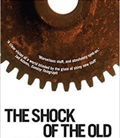

In today’s world our society is largely market driven, everything is gauged by it’s
market values which largely affects innovation centric view, The innovation is to focus
on the technologies we actually use rather than Tomorrow’s World-style, bright new
things that mostly never catch on with the current demand or which won’t long last.
After all overlooked technologies affects our lives in great extend which further
leads to thought-provoking ideas that challenge our innovation-centric view!
We have lived with technology for a long time, and collectively we know a lot about it.
[It is a fact that future of technology is set by the promoters of new technologies.
When we are told about any technology from then on we are made to think about novelty
and the future. For many decades now the term ‘technology’ has been closely linked
with invention (the creation of a new idea) and innovation (the first use of a new idea).
But how true it is?
It looks like we are entering in a new historical epoch as a result of technology. In the
new economy, in new times, in our post-industrial and postmodern condition, knowledge
of the present and past is supposedly ever less relevant. Inventors, even in these
post-modern times, are ‘ahead of their time’, while societies suffer from the grip of the
past, resulting in a supposed slowness to adapt to new technology. There are
new things under the sun, and the world is indeed changing radically, but
this way of thinking is not among them. Although the emphasis on the future
itself suggests originality, this kind of futurology has been with us a long time.
In the nineteenth century the idea that inventors were ahead of their time and that
science and technology were advancing faster than the ability of human society
to cope was a commonplace. By the early twentieth century this notion was
made academically respectable with the label ‘the cultural lag’. In the 1950s
and even later, one could claim without embarrassment that scientists ‘had
the future in their bones’. By the end of the twentieth century, futurism had
long been passé. The technological future was as it had been for a long time.
Intellectuals claimed there was a new kind of future, one prefigured by ‘post-modern’
architecture. Yet this new kind of future was to be brought about by an old-style
technological or industrial revolution which would change everything.] Which raises few
fundamental points.
The Theseus’ paradox is a thought experiment that raises fundamental questions, whether an object that has had all of its components replaced remains fundamentally the same object? Which urges us to think about future improvements, corrections and supervised learning in our innovation.
Oftentimes new innovation/technology is just the reputation of old technology with correct and acceptable reasons. The challenge remains is adoption of technology.
The Theseus’ paradox is relevant for today’s modern world of technology where everyday technology changes, but question remains unanswered whether technology brings back its core value which was the main purpose behind building technology.
Everything! Right from the mattresses we wakes on every day to the last meal of the day.
Technology is everywhere. It’s playing a crucial role to make our lives easier
than before. But thought to ponder is, Are we becoming more dependent on
technology? Does technology overrules our lives? In future generations what would
happen if there is a sudden loss of technology? Still Will we able to survive?
Sometimes technology plays an impressive role in creating unemployment, unresourceful and senseless things. Inventors have to diligently think about the problems which technology creates in everyday life.
I would like to gain your attention in digging more relevant discussion topics in this domain.
We always need to be very careful about the technology we use. Many times most of the corporate houses cannot reveal the actual deep technology involved which further creates a heavy mess. But as technology is evolving Peoples are also evolving! Big Tech giants cannot fool people any more. Through online mode of learning and multiple learning resources many things are unfolding and much to learn!